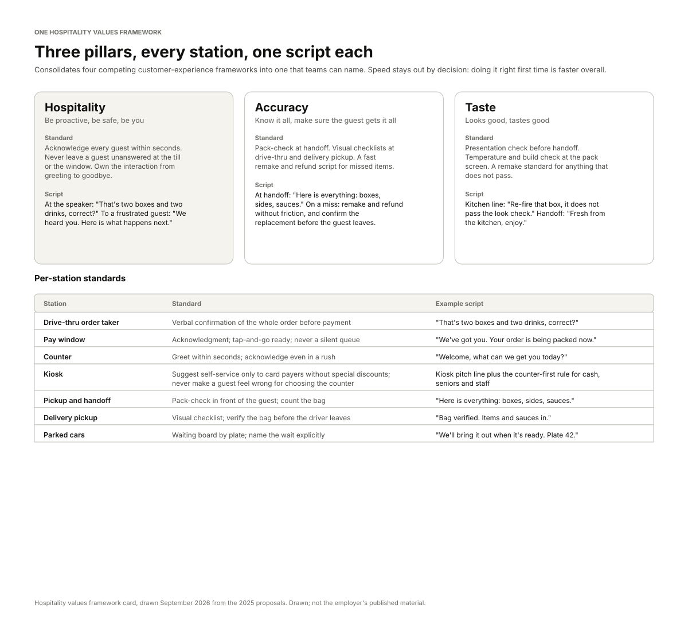
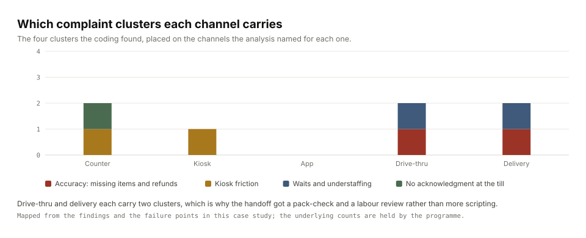
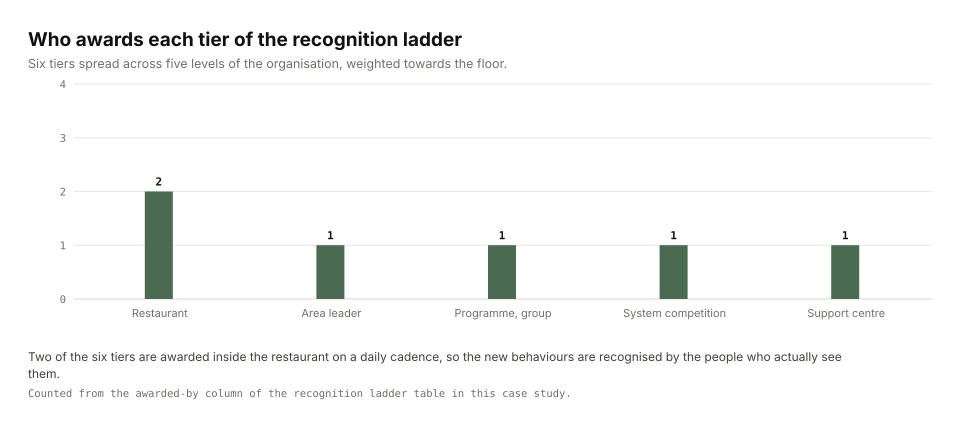

A franchisee group running high-volume restaurants across counter, kiosk, app, drive-thru and third-party delivery. A drive-thru hospitality initiative (scripting, station training, recognition) was to expand to the whole restaurant, and the national customer-experience values framework needed refreshing so the system could deliver it.
My roleExperience Designer leading the analysis, the framework, the standards and the measurement design.
CollaboratorsCustomer-experience programme leads; operations; people and culture; restaurant managers, area coaches and crew.
ConstraintsSpeed institutionalised as the metric and the reward. Field capacity shared with other system-wide rollouts. Success tracked only on verified guest feedback, which excludes other channels. A large share of comments with no channel attribution.
Key decisionDecompose service complaints into speed and execution and let the split, not the operating culture, decide what the programme trains for. Keep speed out of the values framework.
DeliveredComplaint taxonomy and coded register, the speed-versus-execution decomposition, one hospitality-values framework replacing four, per-station standards, a six-tier recognition ladder, the digital capability check and dashboard specification, and a drive-thru trial design.
What happened nextThe trial was run by the programme on verified feedback only. The phased rollout and scorecard alignment sat with the group's leadership and were rephased once when field capacity was absorbed by other rollouts.
MeasuredThe coding method is in section 2: a rolling year of verified feedback, a year of complaints and the churn comments, classified by theme, sentiment and confidence, with low-confidence rows reviewed by hand. Corpus sizes and the trial figures are held by the programme.
Shown hereFigures 1 and 3 were redrawn in September 2026 from the values framework and the proposals.
{kind=link}

The problem
Operational data made the same point from two directions: hospitality was both the biggest reason guests left and the biggest reason they stayed, and service complaints were a large share of all complaints. Meanwhile the operating culture had institutionalised a different number. Speed had been the metric for so long that the reward systems followed it, and teams could read a competence programme as an instruction to slow down.
The values language was fragmented too. Four customer-experience frameworks coexisted in the field, none focused enough on hospitality, and teams cannot execute a value they cannot name. Three intertwined problems followed: a mis-calibrated operating metric, a competence gap disguised as an attitude problem, and a values vocabulary too scattered to change behaviour.
Guests forgive slow competence; they do not forgive fast chaos. Training for speed was training for the symptom.
What I did
- Built the taxonomy with operations. Seven service themes, from missing or wrong items to training gaps. Which themes exist at all is a design decision: we argued three rounds over whether "ignored, no acknowledgment" was its own theme or a demeanour subtype. It stayed separate because its failure signature, invisible queue abandonment, needs a different intervention from rudeness.
- Coded the corpus. A rolling year of verified guest feedback, a year of formal complaints, a store-level export of service comments and the "I won't return" comments, classified by theme, sentiment and confidence, with low-confidence comments routed to a human review queue. External benchmarks made the internal data credible.
- Ran the decomposition. Split the service dimension into speed (clock time from order to receipt) and execution (competence and coordination), classified every service complaint as speed-only, execution-only or both, and ran a cross-mention test to see which mentioned the other.
- Consolidated the frameworks into one with three pillars, per-station standards and example scripts, and designed the six-tier recognition ladder, the training stack and the station stickers linked to scenario videos.
- Redesigned the measurement. Killed the manual observation instrument managers distrusted and replaced it with a five-minute digital capability check feeding a dashboard and a weekly report to area coaches; designed a drive-thru trial on verified feedback only.
What the research found
Execution, not speed, dominated the complaints. Most service complaints involved execution failures; speed appeared in about half, and where both appeared, the speed complaint was usually a consequence of the execution one. The cross-mention test carried the argument: execution complaints rarely mentioned speed; speed complaints often mentioned execution.
Accuracy was the largest single cluster. Missing items and refund friction, especially at drive-thru and delivery handoff. The accuracy pillar exists because of this cluster.
Kiosk friction was second. Combo items counter-only, bulk items missing from the kiosk menu, and guests made to feel wrong for choosing the counter.
Waits and understaffing clustered at handoff. Peak labour planning at drive-thru-heavy sites, not more scripting, was the primary intervention there.
{kind=link}

The attribution gap was reported, not dropped. A large share of comments could not be attributed to a channel. The programme reported that share as a gap every week rather than dropping the rows.
Three decisions
Redirect the programme from speed to competence
Evidence. The decomposition and the cross-mention test; the churn comments; leadership's own line that speed had been the metric for too long.
Alternative considered. Keep speed as the headline metric and add a hospitality module. Rejected: it would have trained the symptom and left the reward system pointing the wrong way.
What we did. Competence-first training, and hospitality repositioned from delight to risk reduction: a bad experience costs more than a good one earns, so preventing a failure is worth more than adding a flourish.
One framework, and speed stays out of it
Evidence. Four frameworks in the field; operations arguing to put speed back into the acronym; the decomposition saying speed follows execution.
Alternative considered. A fifth framework alongside the four, or one with speed as a pillar. Rejected on the data.
What we did. Three pillars (hospitality, accuracy, taste), a standard and a script for each, decomposed to seven stations, with stickers on both sides of the line of visibility linking to short good-and-bad scenario videos.
Measure observed behaviour on verified feedback, and recognise people rather than numbers
Evidence. A manual observation form managers distrusted; unverified feedback channels; the risk of gaming a score.
Alternative considered. Defend and re-train the existing instrument; reward the metric directly. Rejected: distrust does not train out, and rewarding a number invites gaming it.
What we did. A five-minute digital capability check per station feeding a dashboard and a weekly area report; success tracked on verified feedback only, with the scorecard misalignment named as an open item; a six-tier recognition ladder from daily bingo hooks to quarterly awards, with surprise physical awards chosen to avoid gaming.
What was delivered

| Tier | Mechanic | Awarded by | Design intent |
|---|---|---|---|
| 1 | Bingo hooks on training behaviours | Self and manager | Daily practice of the new standards |
| 2 | Hospitality hero pins | Restaurant managers | Visible, immediate recognition |
| 3 | Hero socks | Area coaches | Cross-store visibility |
| 4 | Team competitions | Programme leads | Social proof at group level |
| 5 | National team scoring | System competition | Hospitality enters the score that already drives behaviour |
| 6 | Quarterly service and taste awards | Support centre | A sustained, calendar-driven cadence |
{kind=link}

Also delivered: the coded evidence register and channel analysis, the decomposition exhibit, the guest journey below with its measures and fail points, store-level clusters each labelled by its dominant failure signature with a remediation playbook per cluster, the training stack (modules, station stickers, scenario videos, placement guides, the parked-car waiting board), the digital observation form and dashboard specification, and a three-phase rollout plan with a gate at each phase.
| Stage / lane | Order entry | Payment | Production & pack | Handoff | Post-visit feedback |
|---|---|---|---|---|---|
| Guest (frontstage) | Counter · kiosk · app · drive-thruOrder entry across four channels; kiosk friction is the leading entry complaint. | Acknowledged at the tillVerbal acknowledgment standard: no silent queue abandonment at the busy till. | Order built, packed, handed overAccuracy is the largest complaint cluster: missing items and refund friction. | Counter, window, or delivery pickupLong waits and understaffing dominate at drive-thru and delivery handoff. | Invited to give feedbackMost comments arrive without channel attribution: the named data gap. |
| Backstage systems | Kiosk routing rulesSuggest self-service only to card payers without special discounts; counter-first for cash, seniors, and staff. | Station scriptingAcknowledgment and recovery lines scripted per station; queue abandonment intercepted. | Pack-check at handoffVisual checklists at drive-thru and delivery pickup; fast refund and remake script. | Peak labour planningLabour-plan review at drive-thru-heavy sites; parked-car waiting board makes the wait explicit. | Attribution + verified rulesCoding rules shrink the unattributed pool; measurement uses verified feedback only. |
| Measures | Kiosk-friction theme shareOrder-entry complaints tracked as a weekly theme by cluster. | Acknowledgment adherenceCapability checks on digital observation forms; script adherence scored. | Order accuracyPack-check completion plus accuracy-theme trend. | Wait-theme trendWeekly rank versus the prior week, flagged to area coaches. | Channel-attribution rateUnattributed share reported as a named gap, never dropped. |
| Failure points | F-01 Kiosk friction · combo items counter-onlySecond-largest complaint cluster; bulk items missing from the kiosk menu. | F-02 No acknowledgment · queue abandonmentThe ignored / no-acknowledgment theme; invisible abandonment. | F-03 Missing items · refund frictionLargest complaint cluster: the accuracy pillar exists because of this. | F-04 Long waits · understaffingSecond-largest cluster; peak labour review is the primary intervention. | F-05 No channel attributionLargest slice of the channel split; named rather than dropped. |
How it was measured
Verified service satisfaction across all touchpoints.
BaselinesVerified guest feedback over a rolling year by theme and channel; the formal complaints register; the churn-comment export; team confidence, job satisfaction and role comfort from the team survey.
LeadingOrder accuracy (pack-check completion); perceived competence (execution-theme share); acknowledgment (script adherence on the capability check); the wait-theme trend.
LaggingNegative comment rate; churn-relevant themes; team confidence and tenure; remakes and refunds.
Trial designA drive-thru trial in a set of restaurants, measured on verified feedback only, with service satisfaction, service quality, order accuracy, order speed, friendliness mentions and negative comments as the tracked measures. Order speed was tracked to show that competence-first did not slow service.
Where the numbers sitThe trial and satisfaction figures are held by the programme that ran the trial, because the measurement was designed for it to keep running; what travels is the decomposition into speed and execution, and the recognition ladder and observation instrument built on it.
What I would do differently: design the trial measurement with the programme team so the result travels with the case rather than staying with the programme.
Sponsor, scope and gates
The franchisee group's customer-experience programme leads, with operations as co-owner.
Scope inSentiment analysis of the guest-feedback corpus; service strategy across counter, kiosk, app, drive-thru and delivery; the values framework, standards, training stack, recognition and measurement design; a phased rollout plan.
Scope outMenu and product changes; labour model redesign beyond peak planning at drive-thru-heavy sites; the group's balanced scorecard, whose alignment was named as an open item.
Decisions requestedAdopt competence-first as the programme's premise; approve the single framework and retire the four; fund the training stack and recognition ladder; run the drive-thru trial before the whole-restaurant expansion; take the scorecard alignment to the leadership forum.
Timeline and gatesSixteen weeks of design: research and coding (weeks 1 to 5), decomposition and synthesis (6 to 8), framework and standards (9 to 12), measurement, trial and rollout design (13 to 16). Three rollout phases, each with a proceed, escalate, pause, cancel or revisit gate on timeline, cost, resource, quality and risk.
Risks managedSpeed culture reading the programme as slowing down (mitigated with the right-first-time argument and speed tracked in the trial); field capacity (phased and gated, and rephased once rather than forced); measurement honesty (verified feedback only; the attribution gap reported weekly).